The asterism A.
An A drawn the way star atlases draw figures: lines stop short of every star, stars are sized by magnitude, and the apex carries a four-point diffraction sparkle. The crossbar rises slightly to the right and runs on as a dotted vector toward one more faint star.
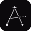
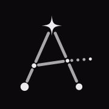
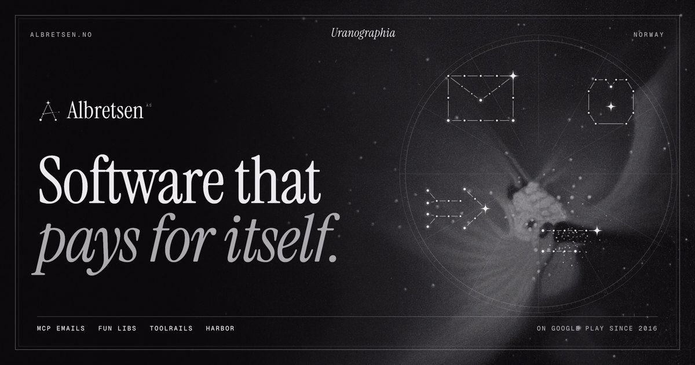
Eight greys, one hue.
Every grey leans very slightly toward hue 312 in OKLCH, a violet you barely see. The interface itself never uses colour. Colour shows up only inside the imagery: Cellarius's hand-colouring, Haeckel's stained nuclei and the products' own logos.
oklch(0.611 0.166 33)
#d4553c
oklch(0.657 0.068 187)
#5e9f98
oklch(0.753 0.132 96)
#c8ae3e
oklch(0.575 0.122 357)
#b0577a
These four are sampled from the plates. They are listed so captions can name them, and they never fill buttons, links or backgrounds.
Gravitas, then data.
Instrument Serif sets the display type, condensed and engraved-looking, like a title cartouche. Geist sets the reading text. Geist Mono, in tracked uppercase, sets every number and catalogue label.
Aa Aa
Software that pays for itself.
Geist Light 18/27. Fun Libs is a fill-in-the-blanks word game for Android and iOS, built at 17 with no marketing.
Geist Regular 15/23 for captions and secondary copy.
Geist Mono 11 · +0.18em · $782 MRR · 113,000+ installs · 549 commits
claude mcp add albretsen https://albretsen.no/mcp
Grounds of night.
E. L. Trouvelot's pastel astronomical drawings (1872–82), from the NYPL scans, cropped clear of the plate margins and regraded onto the tinted grey ramp. They are dark enough to sit under text, and they keep the paper's striation, so the site reads as printed matter rather than a render.
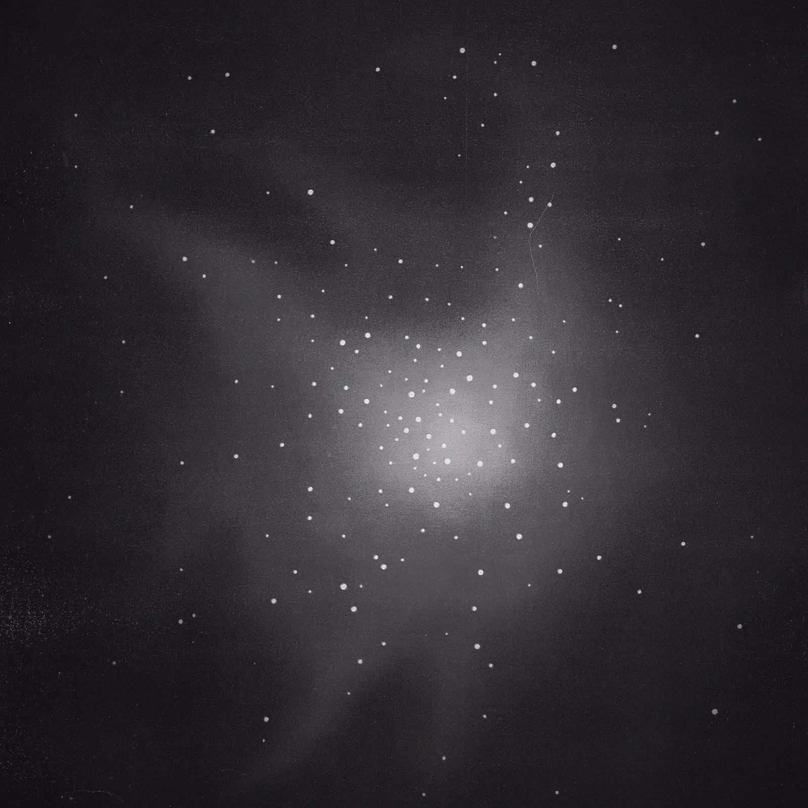
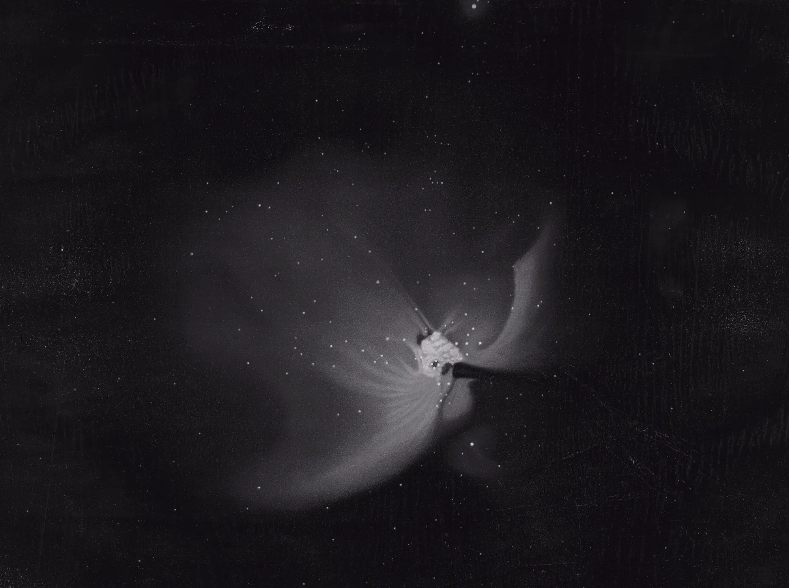
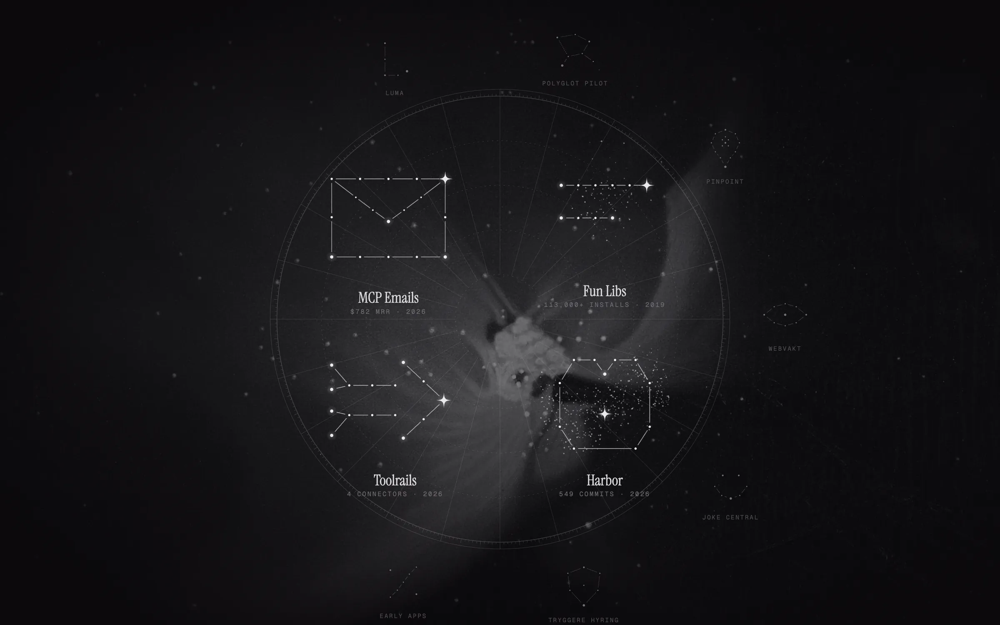
Tabulae I–IV.
Each live product is a plate in the atlas. Its constellation is drawn from a real number, and its real logo sits in the lens, untouched. Below them are the retired products, kept as constellationes obsoletae, the way old atlases kept the figures astronomers had stopped using.
Specimens, plates & ephemera.
Texture for the long middle of the site: a colour star atlas, Haeckel's radiolarians, a Beardsley figure holding up a star, two more Trouvelot plates, an orbit diagram of the decade, a grid tile and a grain tile.


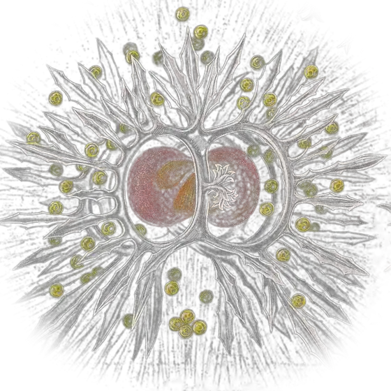

Someone has to hold up the star.Aubrey Beardsley, The New Star, 1896 · use for the person / about section

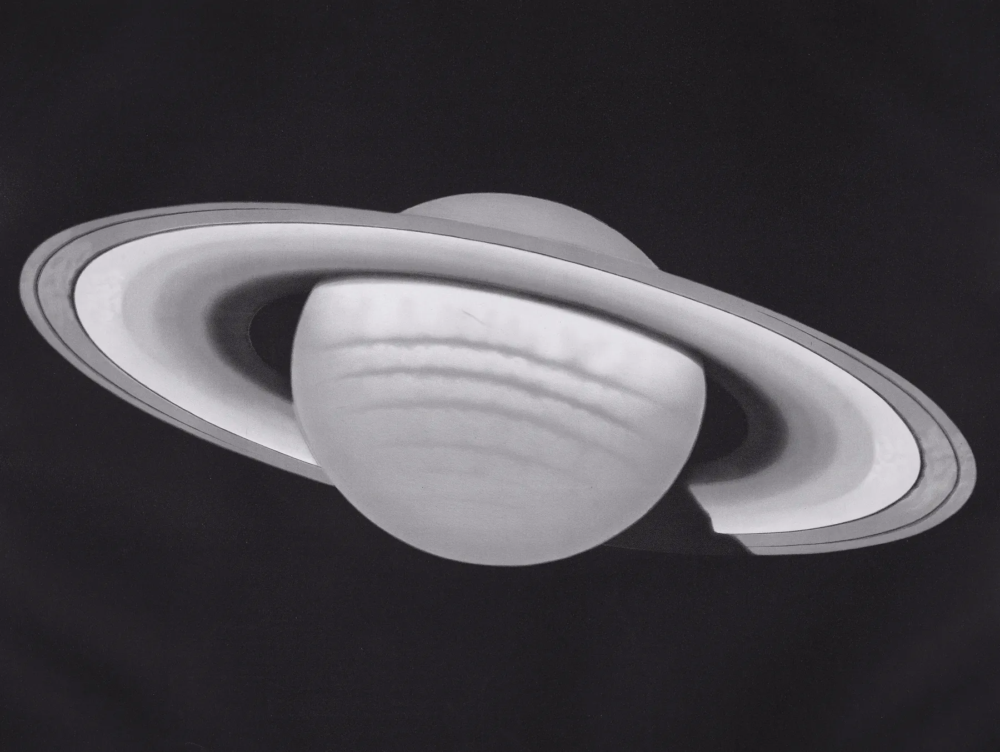

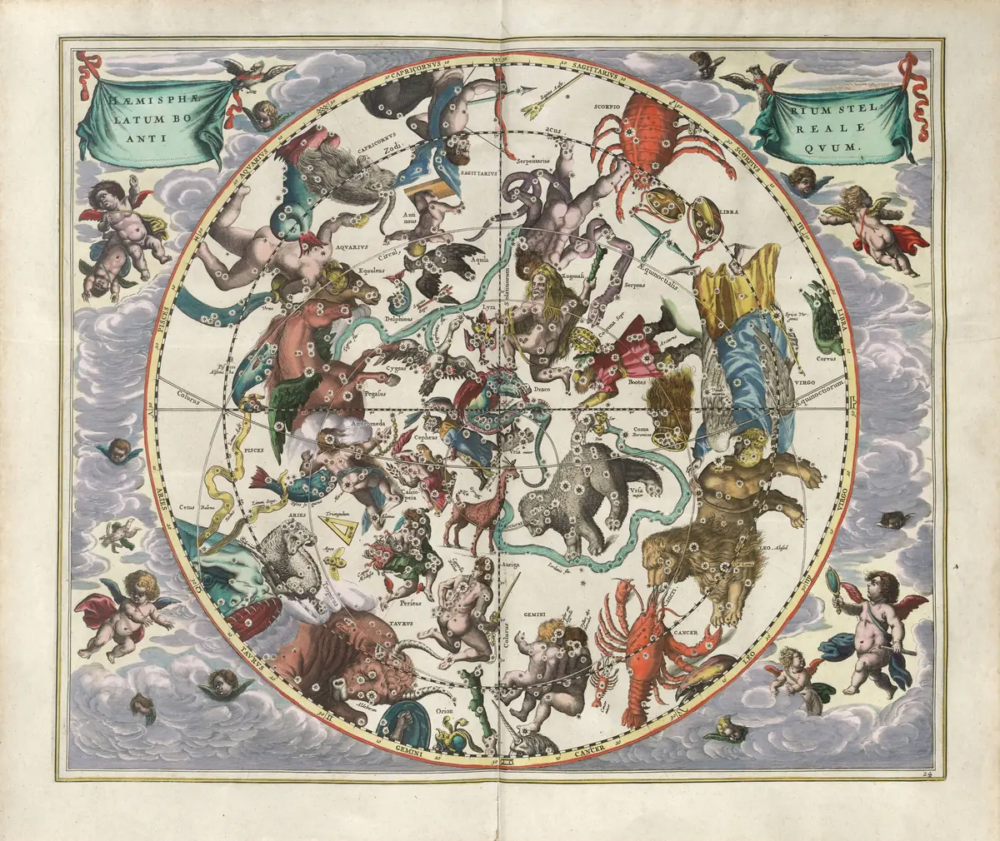

The celestial globe.
A 3D sphere drawn entirely in SVG. It carries all 716 of the site's stars plus a scatter of unnamed ones. Drag to turn it; let go and it keeps spinning, then settles back into a slow drift. Stars on the far side dim. The line underneath names the figure facing you.
js/globe.js
mountGlobe(host, { size }) → { focus(id), destroy() }. It has no dependencies, about 9 KB, and respects reduced motion.
js/uranographia.js
mountChart(host) → { setReading('sky' | 'ledger'), toggle() }. This is the masthead chart above. The pointer acts as a mass, stars lean toward it, and hovering a figure redraws its lines. Demo pages: demo-chart.html and demo-ignition.html.
Seven named movements.
All seven run on the Web Animations API, with CSS keyframes where CSS is enough. Each movement says something about gravity or the sky, and each collapses to a fade when reduced motion is set.
Ignition loader
Dust falls under gravity into the six stars of the A. The lines arrive fractured and morph whole (a path d morph), the dotted vector runs out, and the night collapses into the apex star. The counter totals the real 716 stars.
Plate rise entrance
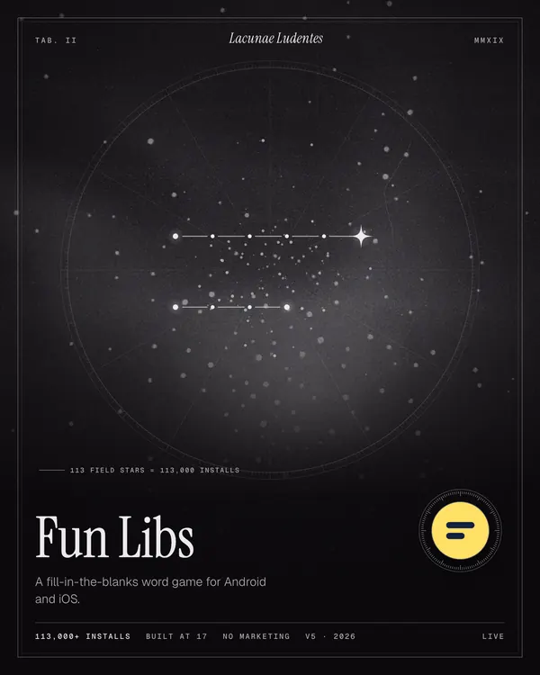
A plate surfaces from below a hairline, clipped, and unblurs as it lands. This is the Apple start-frame/end-frame settle, done with clip-path and a 6% scale.
Lensing hover
On hover, a card's lens ring turns 12° on an overshoot curve and the figure redraws line by line (stroke-dashoffset, staggered 45 ms).
Twinkle idle / hover
The brightest star breathes, turning 45° and dimming to 70%, on a 5.5 s cycle. When its link is hovered, the cycle quickens to 1.4 s.
Ephemeris Radix accordion
Radix measures the content and passes its height as --radix-accordion-content-height. The panel opens to that height while a mask sweeps down it like a chart unrolling, and the trigger's star turns into a cross.
Precession transition
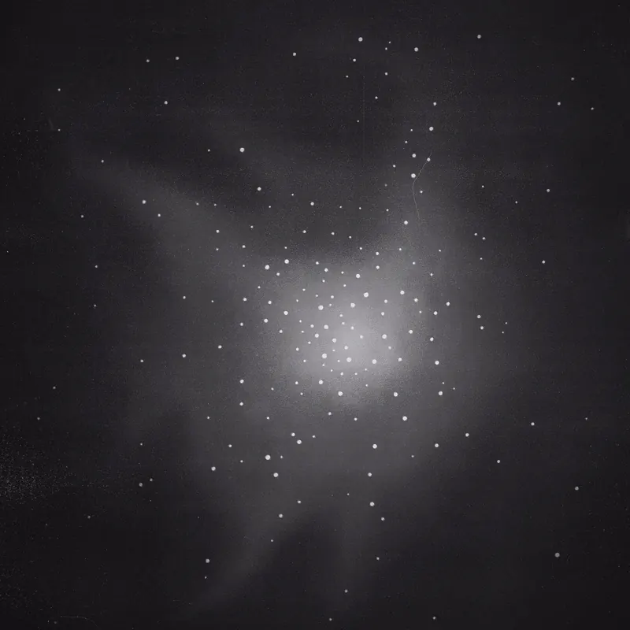
Fun LibsOn a page change the whole sky turns 7° about the apex star. The View Transitions pseudo-elements are driven with WAAPI pseudoElement.
07 Reading: the Sky / Ledger toggle in the masthead, a Radix ToggleGroup with a sliding pill on an overshoot curve.